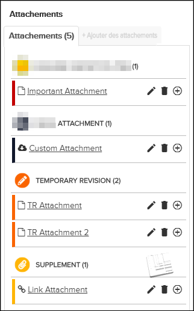

Volet des attachements
Pour ouvrir le volet Attachements, cliquez sur l'onglet
le volet Attachements, cliquez sur l'onglet
 Attachements sur le côté droit de la page ou cliquez sur l'icône
Attachements sur le côté droit de la page ou cliquez sur l'icône  Télécharger une révision / supplément temporaire. Ce volet contient
des listes de attachements pour le document, y compris
Télécharger une révision / supplément temporaire. Ce volet contient
des listes de attachements pour le document, y compris RÉVISION TEMPORAIRE et / ou
RÉVISION TEMPORAIRE et / ou  SUPPLÉMENT. Vous pouvez afficher une attachement en cliquant sur son
titre.
SUPPLÉMENT. Vous pouvez afficher une attachement en cliquant sur son
titre.
Si toutes les autorisations sont activées pour Peut télécharger supplément, vous pouvez également utiliser ce volet pour gérer les attachements.
Pour ajouter une nouvelle attachement au document, cliquez sur l'onglet + Ajouter des attachements. Voir Ajouter Attachement.
Selon vos autorisations et la source de la attachement, plusieurs icônes peuvent apparaître
à droite du titre dans le volet  Attachements. Pour plus de détails sur les icônes
d'action possibles, reportez-vous à ce tableau:
Attachements. Pour plus de détails sur les icônes
d'action possibles, reportez-vous à ce tableau:
| Icône | Description |
|---|---|
Non applicable pour Pinpoint Standalone Light. Remarque : Cette icône ne s'affiche qu'aux utilisateurs dont toutes les
autorisations sont activées (Utilisateur administrateur ) pour Peut télécharger
supplément. Voir Migrer les Attachements.
Au moment de la migration des attachements de la révision de publication précédente vers le projet de révision en cours, le numéro de révision individuel de chaque document de la publication est comparé aux numéros de la révision de la publication précédente. Pour chaque document qui a un nouveau numéro de révision, toutes les attachements au les documents (y compris ceux aux points d'ancrage dont le contenu est resté le même) reçoivent cette icône. Cette icône ne représente qu'un conflit potentiel dans le cas où la attachement contredit les informations mises à jour dans la dernière révision. Si vous disposez des autorisations appropriées, cliquez sur cette icône pour résoudre l'état conflictuel de la attachement. Si vous cliquez sur Continuer dans la fenêtre contextuelle résultante, l'action supprime l'icône de la attachement pour indiquer que la attachement actuelle a été acceptée comme exacte pour la révision actuelle.Remarque : Cette icône est uniquement à
titre informatif. Il est possible de télécharger une nouvelle révision avec
Gestionnaire de données sans résoudre toutes les attachements marquées comme étant
en conflit dans la révision précédente.
Remarque : Si une pièce jointe était
jointe au contenu qui a été supprimé dans une future révision, la fonction de
migration de la pièce jointe ne migrera pas la pièce jointe lorsque la nouvelle
révision aura été publiée. Par conséquent, aucun conflit ne sera généré dans
l'interface utilisateur du volet Annotation/Supplément. Cependant, la pièce jointe
sera toujours visible dans la révision précédente si l'utilisateur dispose des
autorisations aux privilèges "Can View All Draft Content" et "Can View
All Released Content" dans ACM.
|
|
| Cette icône s'affiche si la attachement a été ajoutée directement avec Pinpoint
Viewer et si vous disposez des autorisations. Cliquez dessus pour modifier les
métadonnées de la attachement pour tous les utilisateurs. Pour plus de détails sur
les champs, reportez-vous à Ajouter Attachement. Remarque : Il n'est pas possible de modifier directement le fichier réel de la
attachement. Si vous devez remplacer le fichier lui-même, vous pouvez créer une
nouvelle attachement avec le fichier mis à jour et supprimer le précédent
attachement.
|
|
| Cette icône s'affiche si la attachement a été ajoutée directement avec Pinpoint Viewer et si vous disposez des autorisations. Cliquez dessus pour supprimez la attachement. Reportez-vous à Supprimer la Attachement. | |
Cliquez sur cette icône pour développer (révéler) les détails de la
attachement. Les détails fournis peuvent inclure:
|
|
| Cliquez sur cette icône pour réduire (masquer) les détails de la attachement. |